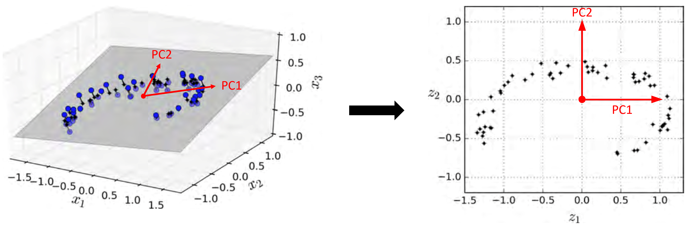
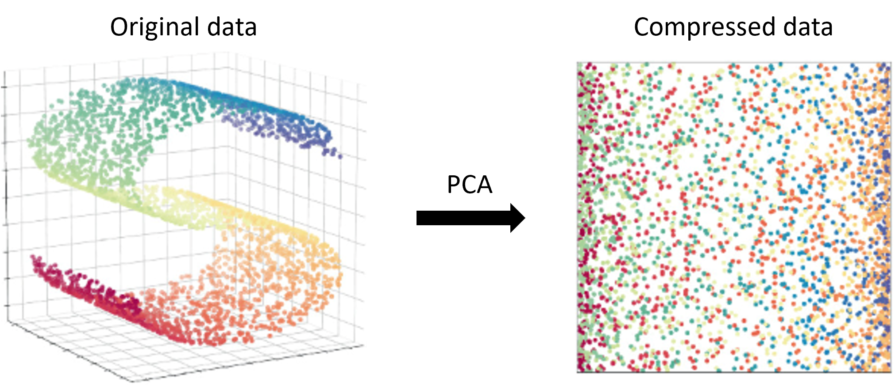

Principal Component Analysis (PCA)#
import numpy as np
import pandas as pd
import matplotlib.pyplot as plt
import seaborn as sns
from sklearn.model_selection import train_test_split
from sklearn.preprocessing import LabelEncoder
from sklearn.decomposition import PCA, KernelPCA
from sklearn.neighbors import KNeighborsClassifier
from sklearn.metrics import accuracy_score
Principal Component Analysis (PCA)#
Principal Component Analysis (PCA) เป็นวิธีการลด dimensionality ของข้อมูลวิธีหนึ่ง
Principal component (PC) คือ แกนที่มีทิศทางอยู่ในแนวที่ dataset มี variance มากที่สุด แต่ละแกนเกิดจาก linear combination ของแต่ละ feature และตั้งฉากซึ่งกันและกัน (PC แต่ละคู่จึงมี correlation เป็น 0)
อันดับของ PC เรียงตามความสำคัญ (PC1 สำคัญที่สุด คือมี variance มากสุด)
เราจะใช้เฉพาะ PC ที่มี variance สูงเพื่อ represent ข้อมูลส่วนใหญ่ ทำให้
dimensionality
สูญเสีย information บางส่วน
มี trade-off ระหว่างการเลือกจำนวน PC กับ model performance คือ ถ้าเอา PC มาใช้น้อย model จะมี performance ต่ำลง เราสามารถใช้ elbow method เพื่อดูว่าควรเลือก PC เท่าใด

เราสามารถทำ PCA ได้โดยใช้ sklearn.decomposition.PCA
# Import data and drop duplicates
data = pd.read_csv('../data/penguins.csv').drop_duplicates()
data
| culmen_length_mm | culmen_depth_mm | flipper_length_mm | body_mass_g | species | |
|---|---|---|---|---|---|
| 0 | -0.909073 | 0.819349 | -1.444400 | -0.573025 | Adelie |
| 1 | -0.835598 | 0.163907 | -1.082147 | -0.509474 | Adelie |
| 2 | -0.688650 | 0.466419 | -0.430091 | -1.208528 | Adelie |
| 3 | -0.872335 | 1.777301 | -0.792344 | -0.700125 | Adelie |
| 4 | -0.945810 | 0.365582 | -1.444400 | -0.731901 | Adelie |
| ... | ... | ... | ... | ... | ... |
| 320 | 0.578782 | -1.701579 | 0.946471 | 0.920410 | Gentoo |
| 321 | 0.505308 | -1.399067 | 1.018922 | 0.825084 | Gentoo |
| 322 | 1.166577 | -0.693208 | 1.526076 | 1.968991 | Gentoo |
| 323 | 0.211411 | -1.146975 | 0.801570 | 1.269937 | Gentoo |
| 324 | 1.074734 | -0.491534 | 0.874021 | 1.524138 | Gentoo |
325 rows × 5 columns
# Features (X) and target (y)
X = data.drop(columns="species")
y = data["species"]
# train-test split
X_train, X_test, y_train, y_test = train_test_split(X, y, train_size=0.8, random_state=12)
# Encode the target
label_encoder = LabelEncoder().fit(y_train)
y_train = pd.Series(data=label_encoder.transform(y_train), name="species")
y_test = pd.Series(data=label_encoder.transform(y_test), name="species")
# Plot the correlation matrix of the original data
corr = X_train.corr().round(2)
fig, ax = plt.subplots(figsize=(5, 4))
sns.heatmap(corr, cmap='coolwarm', ax=ax, annot=corr);
# Create a PCA model
pca = PCA(random_state=5).fit(X_train)
# PCs
PCs = pca.components_
pd.DataFrame(PCs.T,
index=X_train.columns,
columns=[f'PC{i}' for i in range(1, len(PCs)+1)])
| PC1 | PC2 | PC3 | PC4 | |
|---|---|---|---|---|
| culmen_length_mm | 0.440453 | 0.603124 | 0.644813 | 0.162661 |
| culmen_depth_mm | -0.379465 | 0.794952 | -0.440920 | -0.172183 |
| flipper_length_mm | 0.585713 | -0.001672 | -0.200406 | -0.785350 |
| body_mass_g | 0.564755 | 0.065494 | -0.591306 | 0.571944 |
# Project data into the new PCA space
X_projected = pca.transform(X_train)
X_projected = pd.DataFrame(X_projected, columns=[f'PC{i}' for i in range(1, len(PCs)+1)])
X_projected
| PC1 | PC2 | PC3 | PC4 | |
|---|---|---|---|---|
| 0 | -0.901394 | 0.085839 | -0.338317 | 0.214005 |
| 1 | -0.689737 | 0.483665 | 0.655917 | 0.209554 |
| 2 | 2.638389 | 0.030971 | -0.173368 | 0.228922 |
| 3 | -2.731550 | -0.180849 | 0.160533 | 0.567401 |
| 4 | -0.580401 | 0.245141 | -0.450730 | -0.348526 |
| ... | ... | ... | ... | ... |
| 255 | 2.521258 | -0.124581 | 0.245925 | -0.426362 |
| 256 | -2.000521 | -2.076157 | 0.005553 | -0.319857 |
| 257 | 2.209950 | 0.242032 | -0.472449 | -0.014738 |
| 258 | 2.668555 | 0.313754 | -0.207394 | -0.201763 |
| 259 | -0.026819 | 1.687255 | 0.333143 | -0.138766 |
260 rows × 4 columns
# Plot the correlation matrix of the projected data
corr = X_projected.corr().round(2)
fig, ax = plt.subplots(figsize=(5, 4))
sns.heatmap(corr, cmap='coolwarm', ax=ax, annot=corr);
fig, axs = plt.subplots(1, 2, figsize=(12, 4))
# Plot data in 2D initial (flipper_length_mm - body_mass_g) space
scatter0 = axs[0].scatter(X_train.iloc[:, 2], X_train.iloc[:, 3], c=y_train, cmap='viridis')
axs[0].set(title='Initial space', xlabel='flipper_length_mm', ylabel='body_mass_g')
axs[0].legend(*scatter0.legend_elements())
# Plot data in 2D PCA (PC1 - PC2) spaces
scatter1 = axs[1].scatter(X_projected.iloc[:, 0], X_projected.iloc[:, 1], c=y_train, cmap='viridis')
axs[1].set(title='PCA space', xlabel='PC1', ylabel='PC2')
axs[1].legend(*scatter1.legend_elements());
# The variance ratio (variance of a PC / total variance of all PCs) of each PC
pca.explained_variance_ratio_
array([0.6843562 , 0.19162104, 0.09733816, 0.0266846 ])
# Plot elbow curve
variance_ratios = pca.explained_variance_ratio_
n_components_range = range(1, len(pca.components_)+1)
fig, ax = plt.subplots(figsize=(5, 4))
ax.plot(n_components_range, np.cumsum(variance_ratios))
ax.set(
xlabel='The number of top PCs used',
title='Cumulated variance',
xticks=n_components_range
);
# PCA fit with top 2 PCs
pca_compressed = PCA(n_components=2, random_state=5).fit(X_train)
len(pca_compressed.components_)
2
# Compress data
X_train_compressed = pca_compressed.transform(X_train)
X_test_compressed = pca_compressed.transform(X_test)
# KNN (K=8) fit with the compressed training set
knn_compressed = KNeighborsClassifier(n_neighbors=8).fit(X_train_compressed, y_train)
# Compute prediction accuracy on the compressed test set
y_pred = knn_compressed.predict(X_test_compressed)
accuracy_score(y_test, y_pred)
0.9384615384615385
Kernel PCA (KPCA)#
Captures non-linear patterns (similar principle to SVM kernels)
ทำได้โดยใช้ sklearn.decomposition.KernelPCA
# Create a KPCA model
kpca = KernelPCA(kernel='rbf', random_state=5).fit(X_train)
# Project data into the new PCA space
X_projected = kpca.transform(X_train)
n_components = len(X_projected[0])
X_projected = pd.DataFrame(X_projected, columns=[f'PC{i}' for i in range(1, n_components+1)])
X_projected
| PC1 | PC2 | PC3 | PC4 | PC5 | PC6 | PC7 | PC8 | PC9 | PC10 | ... | PC250 | PC251 | PC252 | PC253 | PC254 | PC255 | PC256 | PC257 | PC258 | PC259 | |
|---|---|---|---|---|---|---|---|---|---|---|---|---|---|---|---|---|---|---|---|---|---|
| 0 | -0.472948 | 0.036411 | 0.010638 | 0.278048 | -0.237727 | 0.127205 | -0.093639 | 0.061512 | -0.082170 | -0.007455 | ... | -1.698244e-06 | -2.119919e-05 | -4.676465e-05 | 2.042923e-05 | 2.145721e-05 | -2.121694e-05 | 1.396386e-05 | 1.775959e-06 | 8.529982e-05 | 4.530588e-05 |
| 1 | -0.331052 | 0.431333 | 0.171752 | -0.192034 | -0.333927 | -0.029347 | -0.021743 | 0.011298 | -0.025771 | 0.032862 | ... | 4.239935e-05 | -4.461222e-05 | 1.493010e-04 | 7.905004e-05 | -2.140915e-05 | 9.235986e-06 | 1.711671e-05 | 2.016978e-05 | 5.580999e-06 | -1.586915e-06 |
| 2 | 0.736673 | -0.117006 | -0.407083 | -0.098107 | -0.134878 | -0.011951 | -0.049234 | -0.087213 | 0.010671 | 0.042952 | ... | -4.774727e-06 | -2.687021e-05 | 3.857885e-06 | 4.941159e-06 | -2.516506e-06 | -9.537393e-08 | -1.859834e-06 | -1.746184e-08 | -8.910695e-07 | -2.506871e-07 |
| 3 | -0.338564 | -0.323789 | -0.090210 | -0.203574 | 0.151121 | -0.446815 | -0.195934 | 0.157097 | 0.035015 | -0.148271 | ... | -7.363475e-07 | 8.667590e-08 | -4.875020e-07 | -7.612345e-07 | -1.880152e-07 | 4.389697e-08 | -2.053147e-07 | 7.513876e-09 | -5.044990e-08 | -5.392008e-08 |
| 4 | -0.356367 | 0.175494 | 0.008366 | 0.346067 | -0.137532 | 0.312369 | 0.071291 | -0.126871 | 0.024676 | -0.072368 | ... | -2.735570e-06 | 1.019634e-05 | -5.560093e-06 | -9.869225e-06 | 3.869982e-07 | 4.919456e-06 | 7.225796e-06 | 5.814608e-06 | 3.174675e-06 | 7.791331e-07 |
| ... | ... | ... | ... | ... | ... | ... | ... | ... | ... | ... | ... | ... | ... | ... | ... | ... | ... | ... | ... | ... | ... |
| 255 | 0.718900 | -0.106216 | -0.221847 | -0.059782 | -0.065615 | -0.055995 | 0.026116 | -0.089571 | -0.132344 | -0.166311 | ... | -5.916347e-06 | -6.688019e-06 | 1.242626e-06 | 6.827197e-07 | 1.897681e-06 | 1.299946e-06 | -3.979600e-07 | -3.717975e-07 | -5.344691e-08 | -1.047692e-07 |
| 256 | -0.184715 | -0.393210 | 0.002778 | -0.337335 | 0.449122 | 0.232047 | -0.005497 | 0.112959 | 0.189439 | 0.193858 | ... | 6.778396e-08 | 1.077115e-07 | 3.587532e-07 | 1.968871e-07 | -7.819369e-08 | 2.157928e-07 | 1.197460e-07 | -3.933035e-08 | -5.516154e-08 | 1.303761e-08 |
| 257 | 0.704430 | -0.055895 | -0.391653 | -0.060707 | -0.112372 | 0.101130 | -0.100996 | -0.049208 | 0.027606 | -0.023662 | ... | -1.171293e-05 | -2.830542e-06 | 3.341621e-06 | 4.916890e-07 | -1.504368e-06 | -1.706223e-06 | -3.595803e-07 | 1.373000e-06 | 1.709816e-07 | -1.369608e-08 |
| 258 | 0.696018 | -0.087235 | -0.499881 | -0.139240 | -0.116132 | 0.036521 | 0.080696 | 0.024566 | -0.087128 | -0.090478 | ... | -1.110050e-04 | -5.351661e-05 | 7.569521e-06 | 3.941364e-06 | 2.417536e-06 | 2.540602e-06 | -5.360623e-06 | -1.200519e-06 | -2.846433e-06 | -5.064591e-07 |
| 259 | -0.067449 | 0.749630 | -0.069610 | -0.088272 | 0.370469 | 0.042075 | -0.105126 | -0.026285 | -0.001550 | -0.087629 | ... | 1.123785e-06 | 4.294721e-06 | -1.916929e-06 | -9.745350e-07 | 4.780678e-07 | 4.300318e-09 | -2.059155e-06 | -2.464456e-07 | -1.015957e-06 | -1.293843e-07 |
260 rows × 259 columns
fig, axs = plt.subplots(1, 2, figsize=(12, 4))
# Plot data in 2D initial (flipper_length_mm - body_mass_g) space
scatter0 = axs[0].scatter(X_train.iloc[:, 2], X_train.iloc[:, 3], c=y_train, cmap='viridis')
axs[0].set(title='Initial space', xlabel='flipper_length_mm', ylabel='body_mass_g')
axs[0].legend(*scatter0.legend_elements())
# Plot data in 2D KPCA (PC1 - PC2) spaces
scatter1 = axs[1].scatter(X_projected.iloc[:, 0], X_projected.iloc[:, 1], c=y_train, cmap='viridis')
axs[1].set(title='KPCA space', xlabel='PC1', ylabel='PC2')
axs[1].legend(*scatter1.legend_elements());
# Plot elbow curve (".explained_variance_ratio_" is not available)
variance_ratios = X_projected.std()**2 / (X_projected.std()**2).sum()
n_components_range = range(1, 51)
fig, ax = plt.subplots(figsize=(15, 4))
ax.plot(n_components_range, np.cumsum(variance_ratios[:50]))
ax.set(
xlabel='The number of top PCs used',
title='Cumulated variance',
xticks=n_components_range
);
# Plot trade-off curve between the number of top PCs used and
# the accuracy of KNN model fit with the top PCs
accuracy_from_pca, accuracy_from_kpca = [], []
n_components_range = range(1, len(pca.components_)+1)
for i in n_components_range:
# PCA and kernel PCA with top 'i' PCs
pca_compressed = PCA(n_components=i, random_state=5).fit(X_train)
kpca_compressed = KernelPCA(kernel='rbf', n_components=i, random_state=5).fit(X_train)
# KNN (K=8) fit with the compressed training set
knn_compressed_by_pca = \
KNeighborsClassifier(n_neighbors=8).fit(pca_compressed.transform(X_train), y_train)
knn_compressed_by_kpca = \
KNeighborsClassifier(n_neighbors=8).fit(kpca_compressed.transform(X_train), y_train)
# Compute prediction accuracy on the compressed test set
y_pred_from_pca = knn_compressed_by_pca.predict(pca_compressed.transform(X_test))
y_pred_from_kpca = knn_compressed_by_kpca.predict(kpca_compressed.transform(X_test))
accuracy_from_pca.append(accuracy_score(y_test, y_pred_from_pca))
accuracy_from_kpca.append(accuracy_score(y_test, y_pred_from_kpca))
fig, ax = plt.subplots(figsize=(5, 4))
ax.plot(n_components_range, accuracy_from_pca, label="PCA")
ax.plot(n_components_range, accuracy_from_kpca, label="Kernel PCA")
ax.set(
xlabel='The number of top PCs used',
title='Accuracy of KNN model fit with top PCs',
xticks=n_components_range
)
ax.legend();
Decompressing PCA#
เราสามารถแปลงข้อมูลใน PCA space กลับมาอยู่ใน initial space ได้ แต่จะสูญเสีย information บางส่วน
# Compress data using top 2 components
pca_compressed = PCA(n_components=2, random_state=5).fit(X_train)
X_train_compressed = pca_compressed.transform(X_train)
# Reconstruct the compressed training set
X_train_reconstructed = pd.DataFrame(
pca_compressed.inverse_transform(X_train_compressed),
columns=X_train.columns,
index=X_train.index
)
X_train_reconstructed
| culmen_length_mm | culmen_depth_mm | flipper_length_mm | body_mass_g | |
|---|---|---|---|---|
| 51 | -0.358360 | 0.454933 | -0.547175 | -0.514170 |
| 168 | -0.025197 | 0.690870 | -0.423870 | -0.368581 |
| 236 | 1.167655 | -0.931907 | 1.526215 | 1.481346 |
| 18 | -1.325303 | 0.937409 | -1.618675 | -1.565227 |
| 139 | -0.120898 | 0.459765 | -0.359431 | -0.322455 |
| ... | ... | ... | ... | ... |
| 259 | 1.022247 | -1.011116 | 1.457870 | 1.405008 |
| 130 | -2.146425 | -0.846670 | -1.187333 | -1.276506 |
| 241 | 1.106244 | -0.601546 | 1.274919 | 1.253206 |
| 253 | 1.351495 | -0.718555 | 1.543410 | 1.516902 |
| 155 | 0.992702 | 1.396112 | -0.037602 | 0.084634 |
260 rows × 4 columns
fig, axs = plt.subplots(1, 2, figsize=(12, 4))
# Plot the original data in 2D initial (flipper_length_mm - body_mass_g) space
scatter0 = axs[0].scatter(X_train.iloc[:, 2], X_train.iloc[:, 3], c=y_train, cmap='viridis')
axs[0].set(title='Original data', xlabel='flipper_length_mm', ylabel='body_mass_g')
axs[0].legend(*scatter0.legend_elements())
# Plot the reconstructed data in 2D initial (flipper_length_mm - body_mass_g) space
scatter1 = axs[1].scatter(X_train_reconstructed.iloc[:, 2], X_train_reconstructed.iloc[:, 3], c=y_train, cmap='viridis')
axs[1].set(title='Reconstructed data', xlabel='flipper_length_mm', ylabel='body_mass_g')
axs[1].legend(*scatter1.legend_elements());
Limitation#
PCA cannot separate data on a manifold (an N-dimensional shape) if they are bent and twisted into a higher dimensional shape: this is a limitation of the projection approach.
